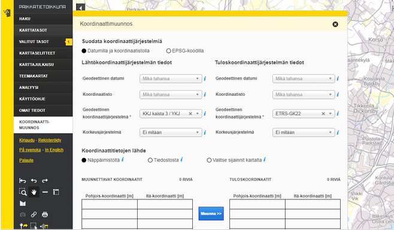
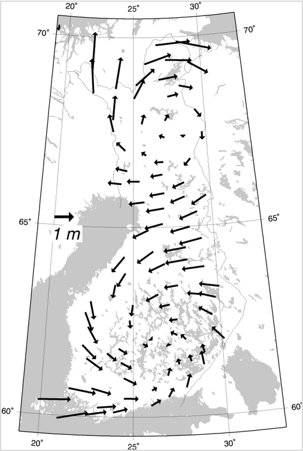

18 Harjoitus 7: Koordinaattijärjestelmät
Harjoituksen sisältö - Harjoituksessa tutustutaan PostGISin tapaan käsitellä koordinaattijärjestelmiä ja karttaprojektioita.
Harjoituksen tavoite - Harjoitusten jälkeen opiskelijalla on perustiedot PostGISin koordinaattijärjestelmien ja karttaprojektion käytöstä.
18.0.1 Valmistautuminen
Avaa pgAdmin selaimeen ja kirjaudu sisään. Avaa Query Tool (Valitse trainingdatabase -> Ylhäältä Tools -> Query Tool). Käytössä tulee olla myös web-selain, joka mahdollistaa pääsyn Maanmittauslaitoksen koordinaattien muunnospalveluun.
18.0.2 Käytettäviä funktioita
Tässä harjoituksessa koordinaattien konversioihin ja muunnoksiin voidaan käyttää mm. seuraavia funktioita:
| PostGIS-funktio | Toiminta |
|---|---|
| ST_GeomFromText(text WKT, integer srid) | Palauttaa ST_Geometry-olion WKT-muotoisesta esitystavasta annetulla EPSG:llä |
| ST_AsText(geometry g) | Palauttaa ST_Geometry-olion määrityksen selväkielisessä WKT-muodossa |
| ST_Transform(geometry g1, integer srid) | Palauttaa geometrian muunnettuna parametrina annetun EPSG:n mukaiseen koordinaattijärjestelmään |
| ST_Transform(geometry geom, text to_proj) | Palauttaa geometrian muunnettuna parametrina PROJ.4-muodossa annettuun järjestelmään |
| ST_Transform(geometry geom, text from_proj, text to_proj) | Palauttaa geometrian muunnettuna PROJ.4-muodossa annetuista järjestelmistä toiseen |
| ST_Transform(geometry geom, text from_proj, integer to_srid) | Palauttaa geometrian muunnettuna PROJ.4-muodossa annetusta järjestelmästä annetun EPSG:n mukaiseen koordinaattijärjestelmään |
18.1 Harjoitus 7.1: Koordinaattipisteen konversio
Muodosta maantieteellisistä ETRS89-koordinaateista (EPSG:4258) 24.3953148 (pituusaste) ja 60.2174696 (leveysaste) Kallion kirkkoa vastaava PostGISin koordinaattipiste:
SELECT
ST_GeomFromText('POINT(24.3953148 60.2174696)', 4258);18.2 Harjoitus 7.2: Koordinaattimuunnos
Tee Kallion kirkon koordinaatteille konversio ETRS-TM35FIN-koordinaattijärjestelmään (EPSG:3067) hyödyntämällä ST_Transform-funktiota.
SELECT
...-- täydennä oikeat funktiot vinkkien perusteella.
-- täydennä lähto- ja tavoitekoordinaattijärjestelmät '...'- kohtiin
SELECT
geometria_tekstinä(koordinaattimuunnos(luo_geometria_tekstistä('POINT(24.3953148 60.2174696)', ...), ...));SELECT
ST_asText(ST_Transform(ST_GeomFromText('POINT(24.3953148 60.2174696)', 4258), 3067));Tuloksena pitäisi tulla seuraavat koordinaattipisteet EPSG:3067-koordinaattijärjestelmässä:
0101000020FB0B0000BE87BABAC1B515411865678EF3795941tai selväkielisemmin:
POINT(355696.43235218147 6678478.225060724)18.3 Harjoitus 7.3: Koordinaattimuunnosten vertailu
Tee seuraavaksi Kallion kirkon koordinaateille muunnos KKJ2-koordinaattijärjestelmään (EPSG:2392).
SELECT
...-- täydennä oikeat funktiot vinkkien perusteella.
-- täydennä lähto- ja tavoitekoordinaattijärjestelmät '...'- kohtiin
SELECT
geometria_tekstinä(koordinaattimuunnos(luo_geometria_tekstistä('POINT(24.3953148 60.2174696)', ...), ...));SELECT
ST_asText(ST_Transform(ST_GeomFromText('POINT(24.3953148 60.2174696)', 4258), 2392));Tuloksen pitäisi olla:
POINT(6678507.76432921 2522091.992364572)Vertaa saatuja koordinaattiarvoja Maanmittauslaitoksen ylläpitämän koordinaattimuunnospalvelun koordinaatteihin. Koordinaattimuunnostoiminto löytyy Paikkatietoikkunan vasemman reunan valikosta nimellä Koordinaattimuunnos.

Huomaa, että EPSG:4258- ja EPSG:3067-koordinaattijärjestelmien välillä tehtiin koordinaattikonversio, eikä PostGIS:n ja MML:n laskennassa ole oleellista eroa.
Tehdään koordinaattimuunnos EPSG:4258- ja EPSG:2392-koordinaattijärjestelmien välillä. Ero PostGISin ja Maanmittauslaitoksen laskemien koordinaattien välillä on merkittävämpi:
| PostGIS | MML | Erotus (m) |
|---|---|---|
| 6,678, 507.764333 | 6,678, 507.677300 | 0.087033 |
| 2,522, 091.992365 | 2,522, 091.368400 | 0.623965 |
Mistä koordinaattimuunnoksen ero voi johtua?
18.3.1 Koordinaattijärjestelmien määritykset
Koordinaattijärjestelmien kuvaukset löytyvät spatial_ref_sys–taulusta:
SELECT
srid, proj4text
FROM
spatial_ref_sys
WHERE
srid = 2392;Tallennetut muunnosparametrit EUREF-FIN-datumin ja KKJ-datumin välillä antavat maksimissaan kahden metrin virheen Suomen alueella (kuva JHS 197-suosituksesta):

18.3.1.1 Puuttuvia koordinaattijärjestelmiä
EUREF-FIN -pohjaisten koordinaattijärjestelmien käyttöönotossa on EPSG-tietokantaan tuotettu erilaisia versioita ns. GK-koordinaattijärjestelmistä.
18.4 Harjoitus 7.4: Koordinaattijärjestelmien määrittelyt
Tarkista mitkä määrittelyt koulutuksessa käytettävässä tietokannassa on ETRS-GK24FIN -koordinaattijärjestelmälle.
Tutki ensin spatial_ref_sys-taulun kenttiä. Päättele mistä kentästä voi löytyä tiedot koordinaattijärjestelmän tiedoista. Käytä LIKE-operaattoria.
SELECT ...
FROM
...
WHERE
...SELECT *
FROM
spatial_ref_sys
WHERE
"srtext" LIKE '...';
-- täydennä '...' kohtaan arvo siten, että kysely palauttaa
-- ETRS-GK24FIN- koordinaattijärjestelmän määritelmän.SELECT *
FROM
spatial_ref_sys
WHERE
"srtext" LIKE '%ETRS-GK24FIN%';18.5 Harjoitus 7.5: Koordinaattijärjestelmien vertailu
Mitä eroja on EPSG:3131- ja EPSG:3879-koordinaattijärjestelmillä?
SELECT
...
FROM
...
WHERE
...-- Missä sarakkeessa on EPSG- koodit?
SELECT
..., proj4text
FROM
spatial_ref_sys
WHERE
... in (3132, 3879);
-- Valitse EPSG-koodin perusteellaSELECT
srid, proj4text
FROM
spatial_ref_sys
WHERE
srid in (3132, 3879);18.6 Harjoitus 7.6: Uuden paikkatietotaulun luominen
Luodaan tietokantaan uusi paikkatietotaulu, jossa on geometria-kenttä, jonka koordinaattijärjestelmä on WGS84. Luodaan tauluun neljä kenttää (gid, name, ICAO, geom):
DROP TABLE IF EXISTS air_geom;
CREATE TABLE air_geom
(
gid serial PRIMARY KEY,
name varchar(254),
ICAO varchar(254),
geom geometry(Point,4326)
);Luetaan airports-taulusta tiedot uuden taulun kenttiin. Muodostetaan ensin SELECT-lauseke, niin voidaan varmistua, että tietojen sisäänluku onnistuu.
INSERT INTO
air_geom(geom, name, ICAO)
SELECT
ST_GeomFromText('POINT(' || airports.longitude|| ' ' || airports.latitude||')',4326),
airports.name, airports.icao_code
FROM
airports;Kahdella putkimerkillä || yhdistetään tekstiä.
18.7 Harjoitus 7.7: Toisen geometriakentän lisääminen
Lisätään vielä tehtyyn tauluun toinen geometria-kenttä, jonka koordinaattijärjestelmä on EPSG:3857:
ALTER TABLE
air_geom
ADD COLUMN
geom3857 geometry(Point,3857);18.8 Harjoitus 7.8: Muunnoksen tallennus geometriakenttään
Luodaan uuteen geometria-kenttään uudet koordinaattipisteet airports-taulusta:
UPDATE
air_geom
SET
geom3857 = ST_Transform(geom, 3857);Jos komennon ajo ei mene läpi, kuinka ratkaisisit ongelman?
Tutustu lentokenttäaineistoon ja etsi virheilmoituksen tuottavat tietue. Kannattaa tutkia minkä alueen kuvaamiseen EPSG:3857-koordinaattijärjestelmä on suunnattu esimerkiksi täältä.
SELECT ...
FROM
...
WHERE
...SELECT *
FROM
air_geom
WHERE
y-koordinaatti(geom) < ...;
-- Millä PostGIS- funktiolla saat palautettua y- koordinaatin?
-- täydennä sopiva arvo '...'- kohtaan.SELECT *
FROM
air_geom
WHERE
ST_Y(geom) < -85.06;Paikannattuasi ongelman, korjaa se (jätä ongelman aiheuttava lentokenttä air_geom-taulun kentän päivityskomennon ulkopuolelle).
SELECT gid,name,icao,ST_asText(geom)
FROM air_geom
WHERE ST_Y(geom) = -90;UPDATE air_geom
SET geom3857 = ST_Transform(geom,3857)
WHERE ...;
-- karsi ongelman aiheuttava tietue poisSELECT gid,name,icao,ST_asText(geom)
FROM air_geom
WHERE ST_Y(geom) = -90;UPDATE air_geom
SET geom3857 = ST_Transform(geom,3857)
WHERE icao != 'NZSP';Ratkaistuasi ongelman, tarkista tulos QGIS-ohjelmiston avulla.